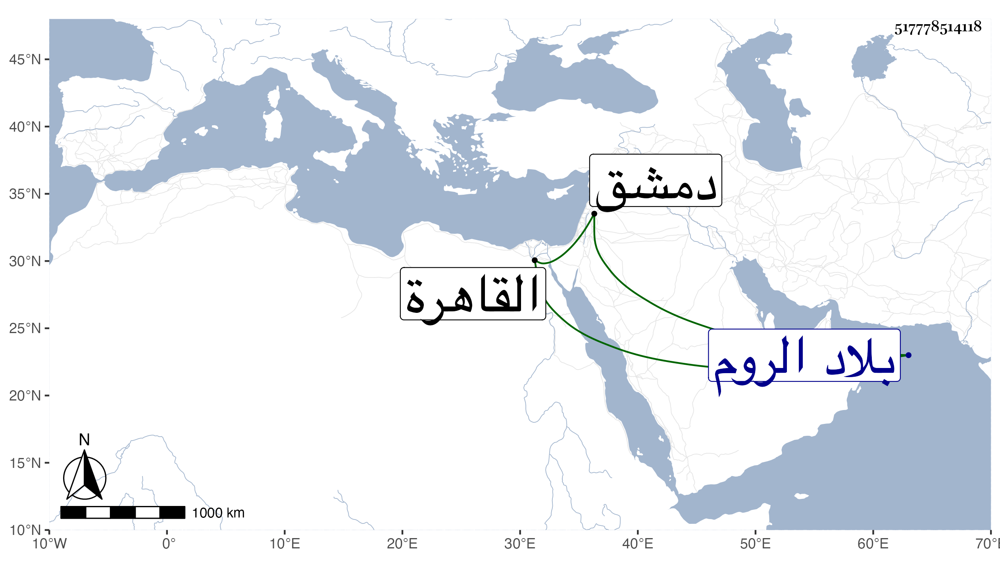

0902Sakhawi.DawLamic.ITO20230111-ara1.EIS1600.517778514118
Biography ID: 517778514118
741
محمد أبو الخير بن الجزري شقيق الذي قبله . ولد في سنة تسع وثمانين وسبعمائة بالمشهد المعروف بمشامش من أرض جلجولية وأحضره أبوه على جماعة بل أسمعه على التنوخي والسويداوي بالقاهرة وعلى ابن أبي المجد وأبي هريرة بن الذهبي بدمشق وقدم على أبيه وهو بالروم سنة إحدى وثمانمائة فصلى بالقرآن هناك وحفظ المقدمة والطيبة والجوهرة من تصانيف أبيه وأخذ عن أبيه القراآت وذكره في طبقات القراء ، وما علمت الآن وقت وفاته .
